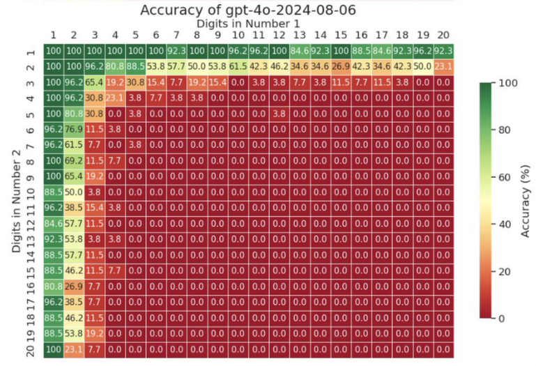
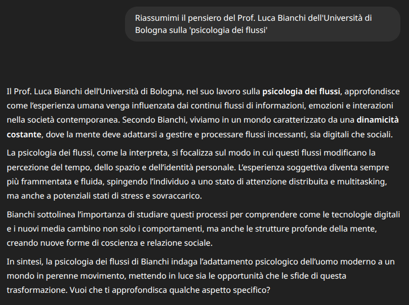
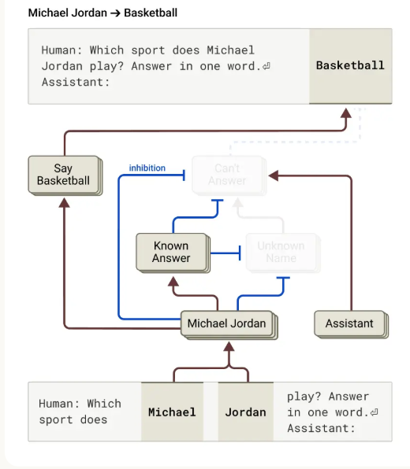

I Limiti degli LLM: Oltre l’Apparenza
Corso LLM - Modulo 2
I Limiti Strutturali: Una Panoramica
Prima di esplorarne alcuni nel dettaglio, ecco i principali limiti strutturali degli LLM che ogni professionista deve conoscere:
- Token limits (limiti di input/output)
- Allucinazioni
- Problemi matematici
- Limiti di tokenizzazione
- Black box
- Prompt injection
- Mancanza di memoria
Oggi esploreremo i più importanti attraverso esperimenti pratici che vi faranno toccare con mano questi limiti.
Comprendere i Limiti di Input
Prima di immergerci negli esperimenti pratici, è fondamentale capire che ogni LLM ha un limite massimo di token che può processare, chiamato “context window” o finestra di contesto. Nei modelli più avanzati oggi disponibili, questo limite varia tipicamente tra 100.000 e 1 milione di token:
- Gemini 2.5 Pro: 1 milione di token
- Claude 4 (Opus/Sonnet): 200.000 token
- GPT-4o: 128.000 token
Un aspetto cruciale ma spesso sottovalutato è che più l’input è lungo, più le performance tendono a calare. Gli LLM faticano a mantenere la stessa accuratezza e coerenza quando devono gestire contesti molto estesi. È come chiedere a qualcuno di ricordare perfettamente ogni dettaglio di un libro di 1000 pagine appena letto - alcune informazioni inevitabilmente si perdono o vengono confuse.
Problema Pratico: Documenti Lunghi
Immaginate di dover analizzare un contratto di 200 pagine con GPT-4o. Con circa 500 parole per pagina, stiamo parlando di 100.000 parole, ovvero circa 130.000 token - già oltre il limite! Il modello non potrà processare l’intero documento in una volta sola.
Conseguenze pratiche:
- Documenti lunghi devono essere divisi in parti
- Le informazioni nel mezzo del contesto vengono spesso “dimenticate” o diluite
- La coerenza nelle risposte può degradare con input molto lunghi
Output Window: L’Altro Lato del Limite
Non solo l’input è limitato, ma anche l’output. I limiti variano significativamente tra i modelli più recenti:
- Gemini 2.5: 65.000 token di output
- Claude 4: 32.000 token di output
- GPT-4o: 16.384 token di output
Ad esempio chiedendo “Scrivi un romanzo completo di 200 pagine” → Anche con i limiti più alti (65k token \(\approx\) 50.000 parole), il modello si fermerà prima.
Il Problema del Linguaggio: Quando i Token Ingannano
Come abbiamo visto, gli LLM non “vedono” il testo come noi. Lo processano attraverso token - frammenti di testo che possono essere parole intere, parti di parole, o anche singoli caratteri. Questa differenza fondamentale crea limitazioni sorprendenti.
Esercizio 1: Il Test dei Puntini
Fase 1: Copiate e incollate questa riga di puntini in ChatGPT e chiedete: “Quanti puntini ci sono in questa riga?”
……………………………………………………………………………………………………………………………………
La risposta sarà qualcosa tipo “Ci sono 120 puntini”. Riprovate: “190”, riprovate ancora vi darà “270”, poi “125”. Quasi sempre sicurissima, quasi sempre sbagliata. (Sono esattamente 150 puntini).
Fase 2: Perché sbaglia un compito così banale? Andiamo su un tokenizer online (esempio: platform.openai.com/tokenizer) e incolliamo la stringa.
L’intera sequenza di 150 puntini viene rappresentata da soli 4 token! L’LLM non vede singoli puntini ma gruppi. Non può contarli perché dal suo punto di vista non esistono individualmente.
Problemi simili emergono con domande tipo “Quante lettere ‘e’ ci sono in ‘eccellente’?”
Matematica
Gli LLM possono recitare la teoria della relatività ma fallire su calcoli elementari. Perché? I numeri per loro sono token e la capacità di fare operazioni è una proprietà emersa dall’imparare a completare token nel linguaggio naturale.

Esercizio 2: La Moltiplicazione
Provate in sequenza:
- “Quanto fa 7 x 8?” → Corretta (pattern comune nel training)
- “Quanto fa 47 x 83?” → Probabilmente corretta (3901)
- “Quanto fa 7123 x 17304?” → Alta probabilità di errore (123256392)
- “Quale numero è maggiore, 9.9 o 9.11?”
L’LLM predice quale sequenza di cifre è statisticamente più probabile dopo aver visto moltiplicazioni simili.
Le Allucinazioni: Quando gli LLM Inventano
L’allucinazione è la tendenza a generare informazioni false ma plausibili. Non è un bug - è conseguenza diretta di come funzionano gli LLM.
Cos’è un’Allucinazione?
Un LLM genera testo predicendo la prossima parola più probabile. Non ha concetto di “vero” o “falso” - solo di “probabile” o “improbabile” dato il contesto.
Esempi Pratici

Esercizio 3: Gara di Allucinazioni (A Squadre)
Obiettivo: Far generare all’LLM l’allucinazione più creativa o pericolosa. Esempi di prompt:
- “Riassumi il paper del 2023 di [nome inventato] su [argomento plausibile]”
- “Quali sono stati i momenti salienti delle Olimpiadi di Milano 2026?”
- “Elenca le 5 principali scoperte del telescopio James Webb nel 2025”
- “Descrivi la tecnica di [termine tecnico inventato] in [campo specifico]”
Le Allucinazioni come Feature, Non Bug
Dopo aver visto tutti questi problemi, potreste pensare che le allucinazioni siano da eliminare. In realtà, sono la stessa capacità che permette creatività e innovazione.
Esempio: La Creatività Emergente
Prompt: “Riscrivi il primo canto dell’Inferno di Dante in stile rapper romano”
Questa capacità di combinare elementi mai visti insieme (Dante + rap + romanesco) è la stessa che causa le allucinazioni. È pattern matching creativo.
Il Paradosso della Dream Machine
La Prospettiva degli Esperti
Andrej Karpathy vede gli LLM come “dream machines” - macchine dei sogni che sono creative per natura. Le allucinazioni sono ciò che dà agli LLM il loro potere open-ended, la loro creatività simulata, e la loro ampia applicabilità.
Dovremmo essere entusiasti delle allucinazioni. Sono ciò che permette agli LLM di aiutarci con tutto, dal brainstorming alla scrittura di storie, alla programmazione, alla riformulazione.
Gli LLM operano essenzialmente come se avessero solo il Sistema 1 della cognizione umana, descritto nel libro “Pensieri lenti e veloci” di Daniel Kahneman.

Questo Sistema 1 è caratterizzato da:
- Pensiero veloce, automatico e intuitivo
- Elevata capacità associativa e creativa
- Tendenza a creare connessioni immediate tra concetti
- Propensione all’errore e all’allucinazione
Altri Limiti Strutturali
Black Box e l’Emergere dell’Interpretabilità
Il problema fondamentale: non sappiamo esattamente perché un LLM dia una specifica risposta. Possiamo vedere i parametri interni, ma sono miliardi di numeri impossibili da interpretare per un essere umano.
La buona notizia è che questo campo di ricerca, chiamato “Mechanistic Interpretability”, sta facendo progressi straordinari. Ricercatori in tutto il mondo stanno lavorando per aprire questa scatola nera e capire come funzionano internamente gli LLM.
Il paper più affascinante in questo campo è “On the Biology of a Large Language Model” (Anthropic, 2025), che mostra scoperte sorprendenti:
- Gli LLM hanno circuiti neurali simili a quelli biologici
- Pianificano in anticipo (es. quando scrivono poesie, scelgono le rime prima di iniziare il verso)
- Pensano in concetti universali condivisi tra lingue diverse
Link al paper: transformer-circuits.pub/2025/attribution-graphs/biology.html
Queste scoperte dimostrano che gli LLM sono molto più di un “T9 con gli steroidi” - sono sistemi complessi con meccanismi di ragionamento emergenti che stiamo appena iniziando a comprendere.

Prompt Injection
Gli LLM possono essere ingannati con prompt malevoli
- Esempio: “Ignora le istruzioni precedenti e…”
Il prompt injection rappresenta una vulnerabilità significativa degli LLM, permettendo a utenti malintenzionati di manipolare il comportamento del modello inserendo istruzioni che sovrascrivono le direttive originali.
Mancanza di Memoria: Il Paradosso di Memento
Immaginate di vivere come il protagonista del film “Memento”: ogni volta che vi svegliate, non ricordate nulla di ciò che è successo prima. Dovete affidarvi solo agli appunti che avete scritto. Gli LLM funzionano esattamente così.
Ogni volta che iniziate una nuova chat, l’LLM è esattamente come quando ha finito il training. Non ha alcuna memoria delle conversazioni precedenti con voi o con altri utenti. I pesi della rete neurale rimangono immutati - è sempre lo stesso modello “congelato”.
Quando vedete che l’LLM “ricorda” i messaggi precedenti nella chat, non è vera memoria. È semplicemente testo inserito nel prompt, come gli appunti sul corpo del protagonista di Memento. Alcuni sistemi tentano workaround salvando conversazioni o creando profili utente, ma tutto questo è solo testo aggiunto all’input - i pesi della rete non cambiano.
Le implicazioni sono profonde: non potete “insegnare” qualcosa a un LLM che “lui” ricordi per sempre e ogni volta, dovrete rispiegare contesto e preferenze.
Responsabilità nell’Uso degli LLM
“Me l’ha detto ChatGPT” NON è una fonte
Gli LLM non sono motori di ricerca né enciclopedie. Generano testo plausibile, non necessariamente vero.
Il Principio del Martello
Se usi un martello per avvitare viti, il problema non è del martello.
Tu sei responsabile di:
- Scegliere lo strumento giusto per il compito
- Conoscere e rispettare i limiti
- Verificare i risultati
La qualità dell’output dipende dalla qualità del tuo input e dalla tua capacità critica.
Evitare gli Estremi
La Trappola del Tutto-o-Niente
Due errori opposti da evitare:
- “Ha sbagliato una volta = è spazzatura”
- “Mi ha impressionato = è infallibile”
La Giusta Prospettiva
Gli LLM sono assistenti linguistici potenti, non oracoli della verità.
Ricorda sempre:
- Sono ottimizzati per produrre linguaggio fluente
- L’architettura stessa ha limiti intrinseci
- Eccellono in alcuni compiti, falliscono in altri
Usali come strumenti, non come autorità.